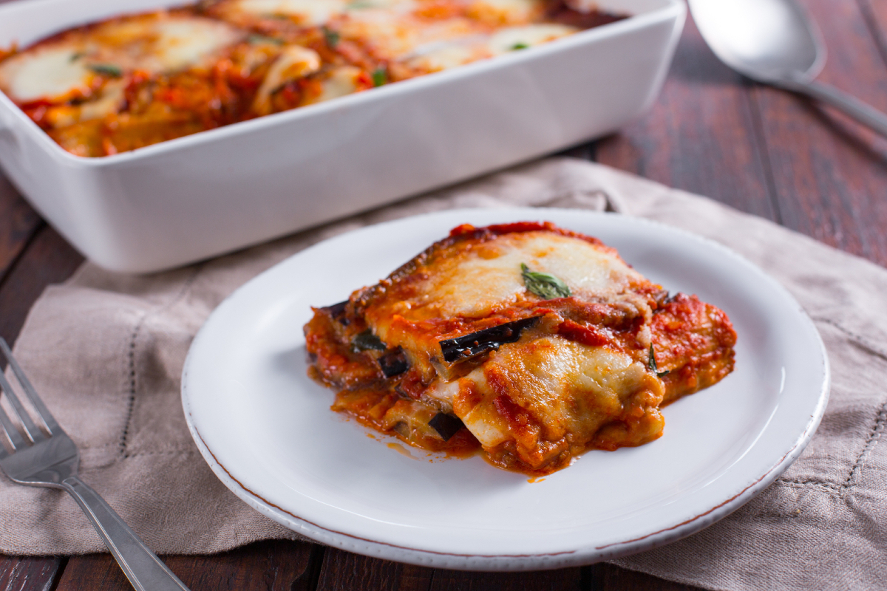
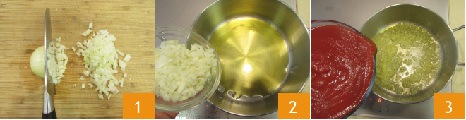
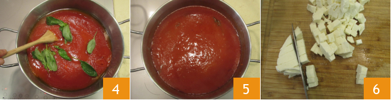
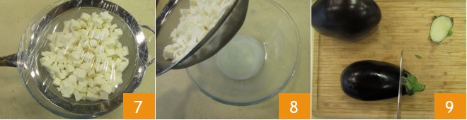
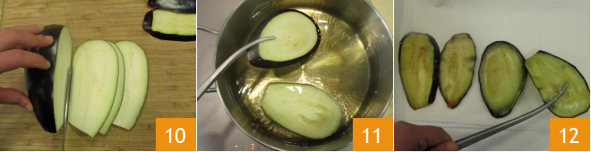

EGGPLANT PARMIGIANA

Also called "The Lasagna of Nature" by food savants all around the globe (literally just me) this dish is more than a pale imitation of the italian lasagna and it absolutely can give it a run for its money!
The eggplant parmigiana allegedly takes its name from the Sicilian word "Palmigiana" which in dialect refers to the blinds made up of wooden slats stacked on one another, but Sicily isn't the only region trying to claim ownership over this vegetable lasagna: Emilia Romagna and Campania also would like to throw their hats in the ring (source: Wikipedia ) and while its origin is in doubt, its success at the table is certain!
Ingredients
- Black Eggplants (1,7kg / 3.75 lbs)
- Fior di latte mozzarella cheese (450g / 1 lb)
- Yellow onions (1)
- Tomato sauce (4 cups)
- Reggiano parmesan (150g / 5,5oz)
- Basil (to taste)
- Black pepper
- Extra virgin olive oil (to taste)
- Peanut seed oil (to taste)
- Fine salt (to taste)
Directions
- Peel and chop the onion
- Add enough oil to a ot to cover the bottom and heat it up, then add the chopped onion
- Let the onion brown for a couple of minutes, stirring often so it doesn't burn, then add the tomato sauce

- Season with salt and add the basil leaves
- Add a little water to the tomato sauce container to rinse it and pour it into the pot. Let it cook for 45-50 mins on low heat
- In the meantime, cut the fiordilatte cheese into small cubes, setting aside one piece that you'll use at the end

- Place the cheese cubes to drain in a colander positioned in a bowl
- Cover the colander with plastic wrap and set aside (this will allow excess liquid to drain off)
- Time to wash the eggplants and trim them

- Cut them lenghtwise into slices around 0,5cm / 1 quarter of an inch thick
- Once sliced, fry the eggplants in peanut oil (heated to 340°F), immersing a few slices at a time
- As soon as they've turned slightly golden, drain on a tray lined with paper towel

- If you run out of space on the tray just place more paper towel on top of the already fried eggplants and create another layer of newly fried ones
- Assemble the parmigiana
- Add tomato sauce to a 33x23cm / 9x13-inch baking dish
- Arrange fried eggplant slices to form a first layer
- Add tomato sauce on top, spread it evenly with a spoon
- sprinkle fiordilatte cubes on top, parmesan cheese and basil leaves


- Repeat, arranging the eggplant slices in the opposite direction (ie: horizontally then vertically)
- Once you reach the last layer, torn the fiordilatte by hand and spread it evenly on top with parmesan and basil leaves
- Bake in a conventional oven preheated to 200°C / 390°F for around 30 minutes
- When the parmigiana is finished baking, let it rest for 15-20 minutes before serving